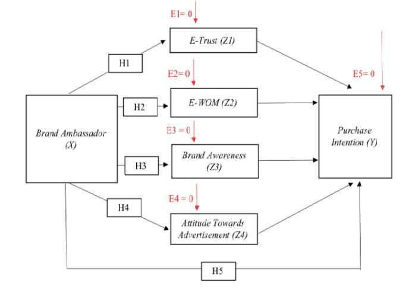

Dependent and Independent Variabel
Pada bab sebelumnya, kita telah membahas mengenai apa itu variabel. Sekarang, kita akan membahas lebih lanjut mengenai dua jenis variabel yang sering digunakan dalam analisis data, yaitu variabel dependen dan variabel independen.
Variabel Dependen
Gunakan diagram SEM (Structural Equation Modelling) di bawah ini sebagai referensi:
reference: https://jurnal.uai.ac.id/index.php/JAISS/article/download/1230/pdf_1
Variabel dependen adalah variabel yang nilainya bergantung pada variabel lain dalam suatu penelitian atau analisis. Variabel dependen juga sering disebut sebagai variabel respon atau variabel terikat. Dalam penelitian, variabel dependen adalah variabel yang ingin kita prediksi atau jelaskan berdasarkan variabel independen.
Contoh variabel dependen adalah Purchase Intention. Hal ini karena berdasarkan hipotesis yang diberikan, Purchase Intention dipengaruhi oleh variabel lain yaitu indicator E-Trust, E-WOM, Brand Awareness, dan Attitude Towards Advertisement, Dimana itu indicator ini merupakan pengaruh langsung dari Brand Ambassador.
Variabel Independen
Variabel independen adalah variabel yang digunakan untuk memprediksi atau menjelaskan variabel dependen dalam suatu penelitian atau analisis. Variabel independen juga sering disebut sebagai variabel prediktor atau variabel bebas. Dalam penelitian, variabel independen adalah variabel yang kita manipulasi atau kontrol untuk melihat pengaruhnya terhadap variabel dependen.
Contoh variabel independen adalah Brand Ambassador, hal ini dikarenankan berdasarkan hipotesis yang diberikan, Brand Ambassador tidak dipengaruhi oleh variabel lain, melainkan variabel ini yang mempengaruhi variabel lain.